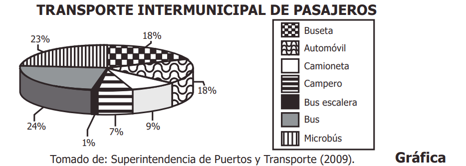

Matematicas
1. A continuación se muestran los resultados de una encuesta que indagó sobre el parque automotor del transporte intermunicipal en Colombia.

A
la mayor parte del parque automotor son automóviles, camionetas y camperos.
B
la mitad del parque automotor corresponde a automóviles, camionetas y camperos.
C
la mayor parte del parque automotor son buses, microbuses y busetas.
D
la mitad del parque automotor corresponde a buses, microbuses y busetas.
Enviar respuesta